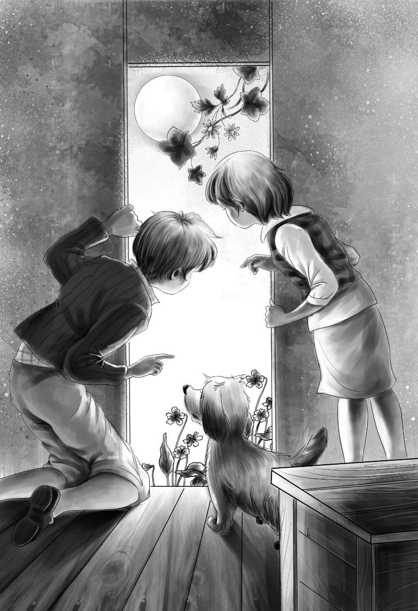

A Queer Noise in the Night
到了午饭时间，孩子们围坐在一起，迫不及待地想看看亨利的包裹里究竟有什么宝贝。
“这是全麦面包和几瓶牛奶，”亨利说，“原本以为没有碗碟，所以我还买了些用手就可以抓着吃的肉干。给望望买的是一根大骨头。”
饥肠辘辘的望望一看到骨头，立马趴在地上啃了起来。
杰西拿出水杯和碗，给每个人倒了些牛奶。接着，孩子们把全麦面包掰成小块，放进牛奶里，用勺子舀着吃。
“真好！”杰西说，“还是用勺子吃饭香！对了，亨利，快给我们讲讲你去镇上的经历吧！”
于是，亨利开始绘声绘色地讲述起来：“咱们住的这座山下就是西沃城——标牌上有名字，我是沿着来时的街道走过去的。小镇的街道漂亮极了，两旁有花有树，还有大房子。有人正在屋外割草，他看上去很和气，好像是个医生。”
“你就是帮他干活吗？”杰西插了一句。
“没错！”亨利说，“他当时热得满头大汗，我正要走进他家，屋里的电话铃响了，他起身就往屋里走，我叫住了他，问他我能不能帮他割草。他说，‘当然，求之不得！’看得出来，他不太会割草。
“于是，我就帮他干活了。他称赞道，‘你的活干得真不错啊，想天天来吗？’他还说从来没见过像我这么会割草的孩子。”
“哇，亨利！”维莉和杰西开心地叫道。
“我告诉他，我很想找活儿干，所以他就让我下午接着去。
“他的房子很漂亮，有车库和大菜园。屋后还有很多樱桃树——简直像个樱桃园。你们真该看看那些樱桃，又大又红，诱人极了！对了，我在厨房附近割草的时候，厨娘还到厨房门口看了看我。”亨利接着说，“她问我喜不喜欢吃饼干，我说喜欢，她就给了我一块。”
“那饼干呢？”班尼咽了咽口水问道。
“她回到厨房后，我就把饼干放到口袋里了。”亨利笑着回答。
“她发现了吗？”杰西担心地问。
“没有，”亨利说，“我一直装着在嚼东西，其实嘴里什么也没有！”
班尼看了看亨利的口袋，它确实鼓得有些古怪。
亨利接着说道：“回家的时候，医生给了我一块钱，厨娘给了我这个小包。”
亨利朝班尼笑了笑，从口袋里掏出一个小包来，里面居然装着十块全麦饼干。
“噢，噢，太好了！”班尼兴奋地大叫起来，“求求你，杰西！我们晚饭吃饼干吧！”
“没问题！”杰西说。
接下来，亨利打开了最后一个包。
“咱们还缺一块桌布，”他说，“所以我就在商店里买了一块，但是还没有缝边儿。”
维莉央求道：“让我来缝吧！”
维莉从工具袋里取出剪刀，把桌布的四个边剪齐。给漂亮的蓝色桌布缝边之前，她先帮杰西清洗了午餐的盘子和碗，在班尼的帮助下把它们收捡妥当了。就在三个人开心地忙活时，亨利向他们道别，再次去镇上了。
望望则努力地用一只爪子刨着洞，看起来想把那根骨头埋起来。
“我来帮你埋骨头吧，小望望。”班尼说。
“用不着，班尼。”杰西阻止道，“望望更愿意自己来。你还是来帮我吧，我想做一把扫帚。”
班尼先还忙活了一阵儿，到处找做扫帚用的树枝，可不一会儿他就枕着小狗在地上睡着了。
两个女孩坐在清澈的小溪边，维莉给蓝色的桌布缝边儿，杰西在做扫帚，她准备用一根长棍当扫帚的把儿。
当亨利回来吃晚饭时，一根长把儿的扫帚已经立在厨房里了，崭新的桌布也已经缝好了边儿。亨利盯着扫帚和桌布欣赏了一会儿，随手递给杰西一个小包。
“哇，是黄油！”杰西喊道，眼里满是惊喜。
的确是黄油——黄黄的，甜甜的。四个孩子已经很多天没有吃过黄油了，他们终于可以坐下来，美美地吃顿晚餐了。
“瞧，这可是一个魔法勺，”亨利说，“要是把它倒过来的话，就可以当小刀用。”
亨利教班尼怎么用魔法勺往全麦面包上抹黄油。对孩子们来说，抹了黄油的面包、肉干、牛奶和饼干，简直是世间的顶级美味。
“你下午干了什么活儿，亨利？”杰西边吃边问。
“我帮医生洗了车，”亨利答道，“还冲洗了人行道，擦了窗户。明天我还要去花园里干活儿。”
说完他看了看小溪，“真想到清凉的水里游个泳啊！”
看着瀑布，亨利愈发觉得身上热热的，粘粘的。
“或许我们可以改造个小游泳池，”他有了主意，“只要用木头建一个水坝就行。”
“没错，当然可以这么做！”杰西赞成道，“我和维莉知道去哪儿找木头和大平板石。”
“真的吗？”亨利问。
“当然！”杰西说，“离这儿不远就有很多。对了，几步远的地方就有个水塘，周围有沙子。可惜水塘不够大，不能游泳。”
“好极啦！”亨利兴奋地叫道，“改天我休息在家的时候，我们可以一起截流建个小游泳池。”
“我的轮子也可以派上用场啦！”班尼说。
“好啊！”亨利说，“我拿轮子给你做辆小车，班尼，那样你就能用小车帮我们搬运石头了。”
“太棒啦！”班尼欢呼道，“我喜欢！”
“好了，好了，现在大家得去睡觉了。”杰西说。
孩子们的确都困了，他们踩着树墩儿，爬进了新家。

大家都睡着了，只有亨利还醒着，他还在思索建游泳池的事儿。这时，他发现望望也没睡。
亨利拍了拍望望：“趴下，望望。”
可望望并没趴下，反而开始轻轻地叫了起来。
“嘘——”亨利坐了起来，杰西也跟着坐了起来。
“望望怎么了，亨利？”杰西轻声问。
“我也不知道。”亨利有点心惊胆战了，“可能它听到树林里有什么动静！”
“快关上门吧，”杰西说，“我好害怕。”
两个孩子轻轻地关上沉重的车门，然后一动不动地坐着聆听，不过什么也没听到。
“趴下，望望，”杰西又说，“快去睡觉吧！”
可望望不仅没有睡，反而又叫了一声。
“也许有人藏在树林里，或是有人想躲到棚车里来。”杰西小声说。
“有可能，”亨利说，“反正小狗不喜欢这个不速之客！”
紧接着，他俩听到树枝被踩断的噼啪声，望望又叫了一声。
“望望，嘘——”杰西赶紧捂住望望的嘴。
“如果林子里真有人走出来，就会领教到棚车里小狗的厉害了！”亨利说。
他把新扫帚抓在手里，紧张地等待着。
但是并没人来——谁都没有来。他俩一直守在门边，妹妹维莉和弟弟班尼则在一旁呼呼大睡。
“把门打开吧！”亨利说。
兄妹俩轻轻地打开门，又仔细地听了听。小狗不停地嗅着，转了三圈后才把头贴到爪子上，趴了下来。
“望望已经不叫了，看来现在警报解除了。”亨利猜测道，“刚才藏在林子里的可能是只兔子吧！”
终于，现在大家都可以安然入睡了。
他们一直睡到了第二天早晨。